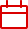

Главная\Архитектурные новости\Здание «Доминион» потрясающего архитектора Захи Хаддид
здание «Доминион» потрясающего архитектора захи хаддид

Автор
Время на прочтение
Опубликовано
Админ
3 мин.
2019-11-12
Заха Мохаммад Хади́д – ирако-британский архитектор и дизайнер арабского происхождения, представительница деконструктивизма. В 2004 году стала первой в истории женщиной, награждённой Притцкеровской премией.
Также Заха Хадид была посмертно удостоена наградой Blueprint Award for Architecture 2016 года, за которую проголосовало сообщество Blueprint.
«У Blueprint были давние отношения с Zaha, поскольку она ввела в эксплуатацию свою самую первую структуру в Великобритании - павильон еще в 1995 году», - сказал редактор Blueprint Magazine Джонни Такер. «Несмотря на то, что она оставила замечательное наследие зданий, как кардифф, мне лично очень жаль, что ей так и не удалось построить свой оперный театр в столице Уэльса. Это - огромная потеря для мира архитектуры 21-го века ».
В некрологе в марте редактор журнала Blueprint Герберт Райт написал: «Какая у нее необычайная сила. Она была сильным, ощутимым гением дизайна, который оставил свой след на нашей планете – элементы из лучшего будущего, здесь и сейчас ».
Здание, за которое Заха Хаддид получила награду Blueprint Award for Architecture
прекрасное Офисное здание «Доминион»
Москва, Россия
Строительство бизнес-центра началось в 2008 году, однако из-за экономического кризиса работы на некоторое время были приостановлены. При участии российского архитектора Николая Лютомского проект был доработан и адаптирован для московских условий того периода, и в 2012 году строительство возобновилось. Открытие здания состоялось 25 сентября 2015 года.
Бизнес-центр представляет собой семиэтажное здание общей площадью 21,4 тысячи м², из которых 9,7 тысяч м² отведено под офисные помещения. Также в здании располагается парковка на 251 место.
В первоначальном проекте присутствовали 20-метровые консоли, бесшовные меняющие цвет панели и элементы, создающие ощущение полёта. Однако в процессе адаптации проекта под российские реалии было принято решение сократить «сдвиги» до 8 метров и отказаться от некоторых элементов.
Проектирование бизнес-центра осуществлялось по методологии параметрической архитектуры — с применением компьютерной графики на специально созданном программном обеспечении. Данная технология использовалась и при создании других крупных проектов Захи Хадид, например Центра водных видов спорта в Англии, Культурного центра Гейдара Алиева в Азербайджане, Национального музея искусств MAXXI века в Италии и других. По словам заместителя генерального директора Zaha Hadid Architects Патрика Шумахера, в основу проекта легли принципы русского авангарда, которые потом были развиты в современной архитектуре.